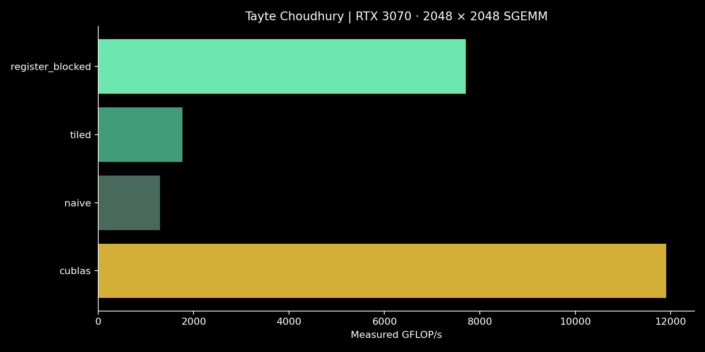

GPU computing / CUDA · C++ · cuBLAS
Fused Softmax & CUDA Kernels
Online softmax reduction and three stages of SGEMM optimization, tested on an NVIDIA GeForce RTX 3070.
319 GB/sBest measured effective softmax bandwidth
7,700Measured SGEMM GFLOP/s
5.95×Register-blocked speedup over naive

From reduction to reuse
Softmax combines numerically stable running maximum and exponential-sum accumulators within a single kernel launch. A block reduction combines the accumulators before normalization. This implementation reads the input twice; effective bandwidth uses the conventional one-read/one-write byte count, not physical memory traffic.
SGEMM progresses from a direct dot-product kernel, to 16 × 16 shared-memory tiles, to 64 × 64 tiles with a 4 × 4 accumulator per thread. Bounds checks support non-multiple matrix sizes.
Validation & measurement
- Softmax: five widths from 128 to 65,536, checked against a double-precision CPU reference.
- SGEMM: sizes 65, 256 and 2,048, checked against cuBLAS with pedantic FP32 math.
- CUDA events, three warmup runs and twenty timed repetitions; allocation and host transfers excluded.
- Maximum softmax absolute error: 1.5e-08. No Nsight profile is included in this run.
Full benchmark
| kernel | rows | columns | ms | GB_s | GFLOP_s | max_abs_error |
|---|---|---|---|---|---|---|
| online_softmax | 8192 | 128 | 0.05801 | 144.607 | 0 | 1.46414e-08 |
| online_softmax | 2048 | 512 | 0.02688 | 312.076 | 0 | 3.61611e-09 |
| online_softmax | 512 | 2048 | 0.026317 | 318.755 | 0 | 9.76077e-10 |
| online_softmax | 128 | 8192 | 0.034918 | 240.235 | 0 | 2.38919e-10 |
| online_softmax | 32 | 65536 | 0.14295 | 117.364 | 0 | 5.12953e-11 |
| cublas | 65 | 65 | 0.008346 | 0 | 65.813 | 0 |
| naive | 65 | 65 | 0.008909 | 0 | 61.653 | 0 |
| tiled | 65 | 65 | 0.006445 | 0 | 85.224 | 0 |
| register_blocked | 65 | 65 | 0.011259 | 0 | 48.782 | 0 |
| cublas | 256 | 256 | 0.01315 | 0 | 2551.59 | 0 |
| naive | 256 | 256 | 0.033331 | 0 | 1006.7 | 9.05991e-06 |
| tiled | 256 | 256 | 0.027187 | 0 | 1234.2 | 9.05991e-06 |
| register_blocked | 256 | 256 | 0.021088 | 0 | 1591.16 | 9.05991e-06 |
| cublas | 2048 | 2048 | 1.44348 | 0 | 11901.7 | 0 |
| naive | 2048 | 2048 | 13.2782 | 0 | 1293.84 | 0 |
| tiled | 2048 | 2048 | 9.71556 | 0 | 1768.28 | 0 |
| register_blocked | 2048 | 2048 | 2.23124 | 0 | 7699.68 | 0 |